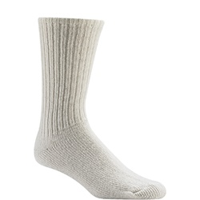
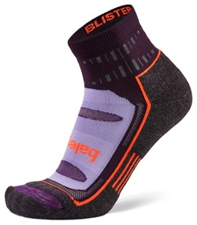
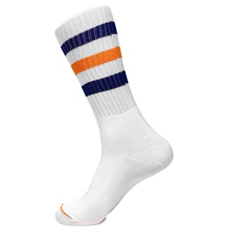
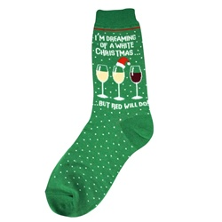
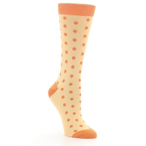
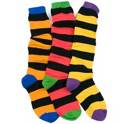

Static Content
This section is static. It sits in the normal flow with no special positioning.
Sock of the Week: The Magnificent Mariner. Famous for vanishing on boats and reappearing in gym bags.
Article One — The Dryer Conspiracy
Some say the dryer eats socks. Others say socks choose freedom...
Field notes show a migration pattern from laundry basket to couch...
Interview with a left argyle sock: “The spin cycle was thrilling...”
Control experiment: ten matched pairs entered the wash...
We charted escapes on paper towels...
Recommended prevention: count to ten before closing the dryer door...
Article Two — Field Guide to Solo Socks
Species A: The Gym Phantom. Habitat: backpack corners...
Species B: The Business Casual Wanderer...
Species C: The Holiday Special. Habitat: plastic bins...
Tracking tip: sprinkle a light trail of clothespins...
Ethics note: never shame a solo sock...
Field sketching improves identification...
Article Three — Reunion Stories
Mailbox miracle: a neighbor returned a polka dot lefty...
Under-couch summit: three loners met, formed a band...
Public service: label baskets “Lost,” “Found,” and “Philosophically Misplaced.”...
Final thought: pairs are nice, singles are valid...